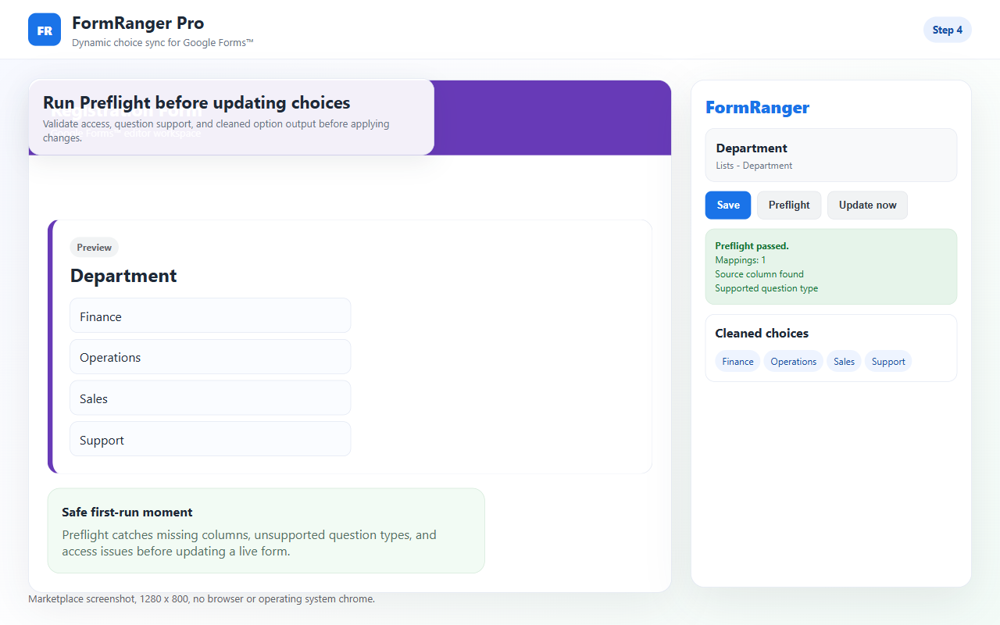
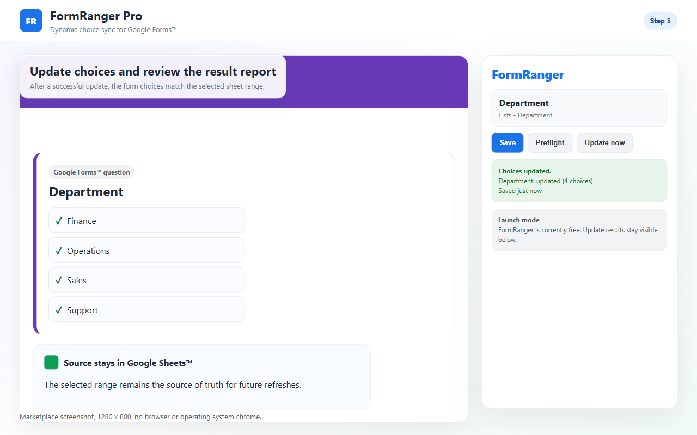

1Sheet column has clean valuessource
2Question is mapped to that columnmapping
3Preflight passes before updatecheck
4Public preview shows new choicesverify
Google Forms dropdowns do not stay linked to a Sheets range by default. Check the source column, mapping, Preflight result, Update now report, and public respondent preview.
If the dropdown is stale, test one copied form with Alpha/Beta in Sheets, run Preflight, click Update now, then inspect the respondent-facing preview. A saved mapping is not enough; the update report must say a question was updated.

The test passes only when Preflight succeeds, Update now reports at least one updated question, and the public respondent preview shows the expected Google Sheets values.
FormRanger refreshes owner-controlled choices before respondents use the form. It is not respondent-time dependent-dropdown, booking, inventory, or payment software.
Do not jump straight to reinstalling. Most stale dropdown cases can be separated into source, mapping, update action, or preview problems.
| Symptom | Likely cause | Next check |
|---|---|---|
| Preflight fails | File, tab, column, or question mapping is invalid. | Re-select the source and mapped question. |
| Preflight passes but nothing changes | Update now was not run, source values are empty, or the wrong form copy is open. | Check the update report and form URL. |
| Editor looks right but public link is stale | Preview window is old or the wrong form link is being checked. | Open a fresh respondent preview from the tested form. |
| Only some values appear | Blank rows, duplicate cleanup, formula output, or whitespace in the source column. | Clean the source column and run one copied-form update again. |
The tab, header, column, blanks, or duplicate values changed after setup.
The dropdown was deleted, duplicated, renamed, or changed to another type.
The editor can mislead you. Open the public form preview after updating.
Blank or renamed headers can point a mapping at the wrong column. Re-select the column and run Preflight.
Empty rows, whitespace-only values, or filtered-out duplicates can leave nothing to update.
If the selected source file is no longer accessible, select it again from the add-on flow.
If your setup is stuck before these screens, collect a screenshot of the last screen you reached and send it with the source column and mapped question type.


Do not troubleshoot directly on a live respondent form.
Select the spreadsheet, sheet tab, source column, and dropdown question.
Preflight must pass, Update now must update, and the public preview must show the new choices.
Manual copy/paste may be enough.
Apps Script works if you maintain IDs, triggers, and authorization.
FormRanger gives a mapped update flow with Preflight and Update now.
Boundary Do not use a visible dropdown as proof of live inventory, paid booking, or reserved seats.
A useful setup-help request should make the failing step obvious. Send the smallest evidence that proves where the chain broke.
Spreadsheet tab name, source column header, and two visible values from the column.
Mapped question title and type, plus whether the form was copied after setup.
Preflight result and Update now message, especially whether it says updated, skipped, or error.
Whether the public respondent preview shows the old choices, new choices, or a different form.
Do not immediately rebuild the form, reinstall every add-on, or edit the live respondent form while people are using it. First reduce the problem to one copied form and two values. If Alpha and Beta do not update correctly in that copied form, the failing step is easier to find. If the copied form works, the live form likely has a mapping, source, or preview mismatch.
Spreadsheet tab name, source column header, and two visible test values.
The mapped question type and whether Preflight reports a valid file, tab, column, and question.
A respondent preview check after Update now, not just the editor state.
No. A Forms dropdown stores choices inside the form.
Check the source column, mapping, access, Preflight result, Update now action, last update report, and public preview.
No. Start with a copied form and two obvious sheet values.
Saving configuration does not update choices by itself. Run Preflight, click Update now, and then verify the public preview.
Yes. Copied forms and duplicated response sheets are common. Confirm the form editor, add-on sidebar, and public preview are all for the same form.
Usually not first. Re-select the source, run Preflight, update one copied form, and only then use support if the result still fails.